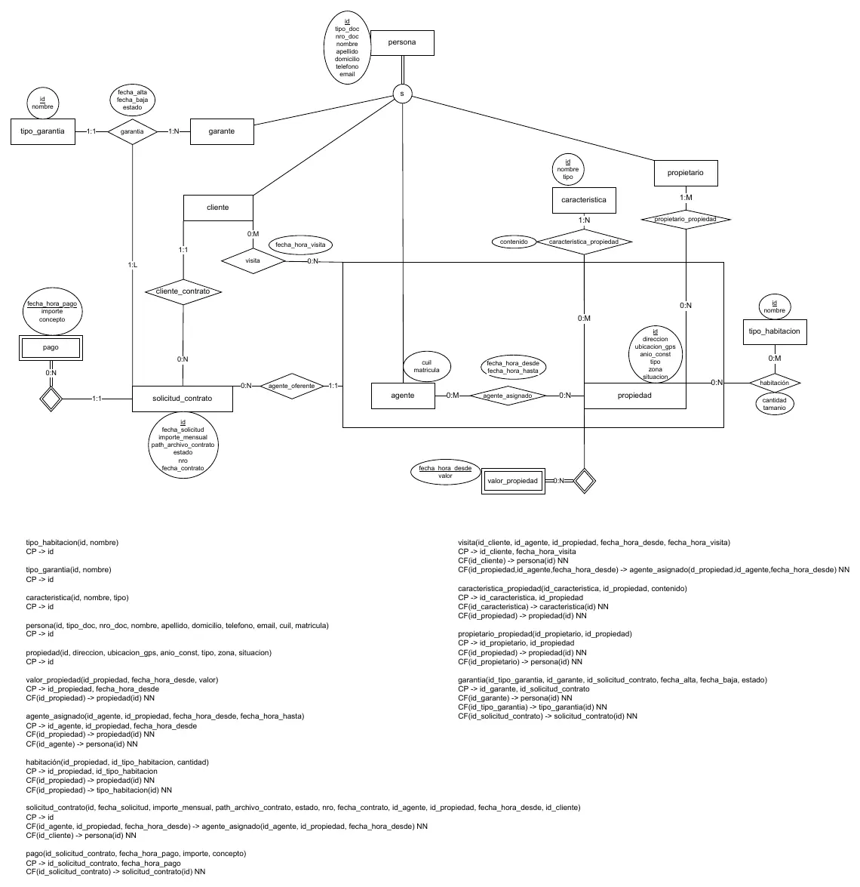

Portal Inmobiliario CalciferHowl
1° parcial, 07/06/2025
Enunciado
Evaluación de Modelos de Datos y Álgebra Relacional
Modelos de Datos
- a) (5 puntos) Esquematice el modelo E-R que se deriva de la narrativa.
- b) (5 puntos) Transforme el modelo E-R en un Modelo Relacional (pasaje a tablas), indicando los atributos de cada tabla indicando aquellas que, indique las claves primarias y foráneas, en estas últimas indique, cuando se requiera, si admiten o no valores nulos.
La inmobiliaria Calcifer & Howl ha decido crear un portal inmobiliario para propietarios, inmobiliarias y clientes y nos convoca para la construcción del mismo. En esta etapa sólo quieren un MVP (minimum viable product) para empezar a operar con alquileres dentro de la inmobiliaria dejando para más adelante el portal para usuarios y compraventa de inmuebles.
Registro de inmuebles
Cuando la inmobiliaria recibe una propiedad para ofrecer registra los datos de los propietario1 y de dicha propiedad2. La misma entonces es asignada4 inicialmente a un agente1, luego podrán asignarse otros4 según la inmobiliaria lo crea apropiado. Una vez que el agente inicial recibe la propiedad debe contactar a los propietarios y constatar la documentación de la misma y registrar en el sistema el valor5 de alquiler de la propiedad, las habitaciones6 y para cada una de las características7 de las mismas, registrar el contenido8 que le asigna a dicha características.
Visita
Cuando un cliente1 se presenta buscando una propiedad2 para alquilar se registran sus datos, se les indican las propiedades que cumplan con sus criterios y se agendan visitas9 para las que resulten interesantes.
Solicitud de Contratos
Cuando un cliente1 informa que quiere alquilar una propiedad, se acuerdan las condiciones de alquiler y se registra una solicitud de contrato10. A continuación se realiza el pago11 de la seña y se presentan las garantías12 de cada tipo13 necesario para la solicitud de contrato. Una vez aprobadas las garantías se firma el contrato y se registra en la solicitud de contrato10.
Reglas de Negocio
- De las personas se registra el tipo y número de documento, nombre y apellido, domicilio, teléfono y email. El sistema les asignará un id único y secuencial que las identifique dentro del sistema. Las personas que el sistema registra pueden ser propietarios, clientes, agentes inmobiliarios o garantes, siendo bastante frecuente que una misma persona sea a la vez 2 o más de estas. Además para los agentes debe registrarse cuil y matrícula.
- Las propiedades se identifican por un id único y secuencial asignado por sistema. De ellas se registra dirección, ubicación gps, año de construcción, tipo, zona y propietarios. La empresa aún no ha decidido los tipos de viviendas y la nomenclatura de zonas así que sólo se registrarán como texto. También se indica la situación3 de la misma.
- La situación de una propiedad indica si la misma puede ser ofrecida o se encuentra en proceso de registro o alquiler. Al registrar la propiedad se asigna situación “a verificar”, cuando el agente inmobiliario aprueba la documentación y carga los datos cambia a “en oferta”. Luego al ser señada cambia a “señada” y mientras está en alquiler pasa a “alquilada”, volviendo a “en oferta” automáticamente si al finalizar el período de la seña no se registró el alquiler
- Una propiedad es asignada a un agente inicialmente para la carga de la misma pero una vez que todo está listo la misma puede ser asignada a varios agentes a lo largo del tiempo de manera simultánea o no. Un mismo agente puede ser asignado a una misma propiedad en diferentes períodos y un agente puede ser simultáneamente asignado a varias propiedades. Es importante saber qué agentes fueron asignados, inicio y fin de la asignación. El primer agente asignado siempre será quien constate la documentación.
- Las propiedades tienen un valor de alquiler indicado y durante el alquiler el valor irá cambiando con el tiempo. Es importante llevar un registro histórico del mismo y ya que en algún momento las propiedades estarán publicadas en un portal web será necesario registrar no sólo la fecha sino también la hora en que fué modificada.
- Los tipos de habitaciones están registrados, los mismos se identifican por un número secuencial que asigna el sistema automáticamente y tienen un nombre. Para cada propiedad se deben registrar la cantidad de cada habitación que tiene y opcionalmente el tamaño (generalmente se hace al registrar la propiedad)
- Las características de las propiedades van cambiando según el mercado, por ejemplo actualmente una de las características es "apto crédito" pero a futuro puede dejar de ser necesario expresarla, por ello se necesita una
grán flexibilidad en las mismas. Por este motivo las características no están predefinidas en la propiedad y son cargadas por los agentes según necesidad. Las mismas se identifican por id único y secuencial que asigna el sistema, tienen un nombre y un tipo (string, si-no, fecha, superficie y podrán agregarse más a medida que el sistema lo soporte). Ejemplos de algunas características son: vista,estado, gas natural, pileta, expensas, sup. construida, sup. total.
- Una propiedad puede tener muchas características y una característica puede ser aplicada para muchas propiedades, pero para cada característica de una propiedad, sólo se puede tener un único contenido (que se registra como texto y luego será utilizado y validado por la aplicación según el tipo indicado para dicha característica).
Ejemplo: para apto crédito se registrará “Sí” o “No” como contenido y se validará con el tipo si-no, mientras que para expensas promedio se podría registrar el contenido “50000” y luego la aplicación deberá convertirla a numérica.
- Las visitas a las propiedades se realizan con uno de los agentes inmobiliarios ya asignados a la propiedad. De las mismas se registra el cliente, la fecha y hora de la visita y la propiedad y el agente asignado con quien se realizó. Pueden agendarse visitas de varios clientes a la misma hora para una propiedad.
- Las solicitudes de contrato se identifican con un número único y secuencial que asigna el sistema. De cada solicitud se registra la fecha de solicitud, el importe mensual acordado para el alquiler, la ubicación del archivo digital con el contrato redactado, el cliente que realiza la solicitud, la propiedad junto al agente previamente asignado que gestiona la solicitud de contrato. No es requisito haber realizado una visita antes de realizar una solicitud de contrato. Cada solicitud tiene un estado, el cual es asignado automáticamente por el sistema como “en proceso” al crear la solicitud de contrato. Una vez firmado el contrato, el estado de la solicitud pasa a “en alquiler” y se registran la fecha del contrato y el número de contrato que informa el escribano.
- Para registrar los pagos, los mismos deben ser de una única solicitud de contrato, y se registran fecha y hora de pago, importe abonado y concepto. El concepto es un texto descriptivo para llevar registro del motivo por ejemplo: seña, depósito, contrato, pago alquiler, etc.
- De las garantías se registra el garante1, el tipo de garantía13, la solicitud de contrato a la que garantizan y la fecha de alta de la garantía. La misma se registra con un estado “a validar”. Una vez validada se registra estado “aprobada” o “rechazada”. A futuro un garante puede retirar una garantía y se deberá registrar la fecha de baja y pasar a estado “cancelada”. En este caso el cliente1 deberá presentar nuevas garantías. Un garante no puede presentar dos garantías para una solicitud de contrato aún si una fue rechazada.
- Los tipos de garantía se identifican por un número único y secuencial generado por el sistema y un nombre.
Preguntas Frecuentes
Si durante el examen hay preguntas recurrentes de los alumnos o aclaraciones que los docentes crean necesarias las mismas se agregarán a continuación. Si se hace alguna corrección en el enunciado (por error u omisión) se agregarán en negrita y resaltado con rojo.
Resolución
Ver la resolución: DER y pasaje a tablas
Son las hojas originales. Tocá una para verla en grande.


¿Cómo te fue?
Marcá cada tema del examen.
- DERDe la narrativa al DER, en 1° parcial
- PasajePasaje a tablas, en 1° parcial
- ÁlgebraÁlgebra relacional, en 1° parcial